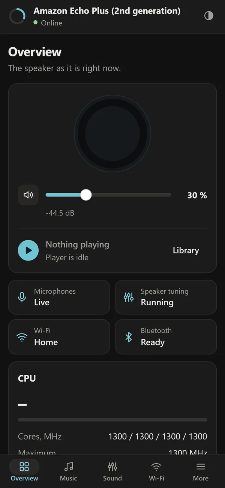
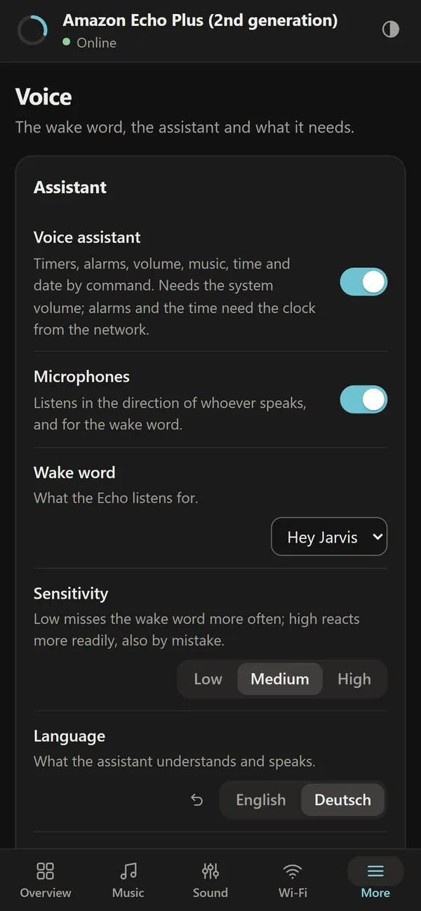
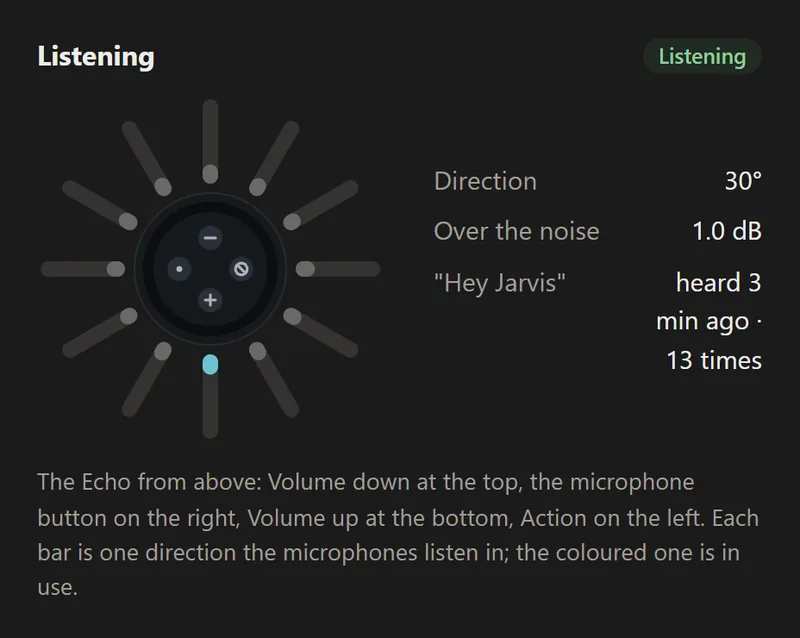

Speaker
Plays as a Bluetooth speaker (AAC and SBC); pair by holding the action button, with chimes. Its own tuning, bass, mids, treble and a loudness boost, sits on top of the stock tuning. Volume and mute buttons work as before.
Early test release v0.0.1
lidar-mainline replaces Fire OS on the Amazon Echo Plus (2nd generation) with mainline Linux and U-Boot. A Bluetooth speaker with its own tuning, a light ring that follows the music, an experimental voice assistant that listens and answers on the device, and a web interface served by the speaker itself.
What it does
Everything runs on the Echo: no account, no app, no cloud service in between.
Plays as a Bluetooth speaker (AAC and SBC); pair by holding the action button, with chimes. Its own tuning, bass, mids, treble and a loudness boost, sits on top of the stock tuning. Volume and mute buttons work as before.
A volume arc, red for mute, and a sound display that moves with the music, as a level or a 7-band spectrum. The ambient light sensor dims the ring with the room.
"Hey Jarvis" wake word, seven microphones with echo cancellation and beamforming, speech recognition on the Echo, spoken answers with local Piper voices, and an assistant for timers, alarms, volume and music. Claude answers the rest, with your own API key.
Served by the Echo itself: overview, music library, sound, voice, light ring, Wi-Fi, Bluetooth and security. Light and dark theme, in English and German, made for phones too, with an optional PIN or password.
The hardware mute still cuts the microphones. No audio leaves the Echo: wake word and recognition run on it. With a Claude key, only the text of questions the assistant cannot answer itself goes out.
Mainline Linux, U-Boot and the tools on top, mostly GPL-2.0 (see Licensing). Build the images yourself; self-built images can also run the Zigbee and Thread radio for Home Assistant.
Web interface
Open the Echo in any browser on your network. No app to install; these are screenshots of the real thing.
The speaker at a glance: volume, what is playing, microphones, tuning, connections and the hardware.
Wake word, sensitivity and language, with a live view of the beamformer: the bar that lights up is where the Echo listens.
Equalizer for bass, mids and treble and a loudness boost, on top of the stock speaker tuning.
What the ring shows: volume arc, mute, a level or 7-band spectrum to the music, and how it dims in the dark.
Drop audio files on the page; they play on the Echo.
Pairing mode, paired phones, the name phones see and the pairing chimes.
The network the Echo joins, with signal, band and bit rate.
An optional PIN or password for the whole interface, and from where it can be reached.
The same interface on a phone, with a tab bar at the bottom. It follows the system theme, light or dark.


Voice experimental
The voice path runs on the speaker. Only questions the assistant cannot handle can go out, and only if you set it up.
"Hey Jarvis" is detected on the device, with an adjustable sensitivity.
Seven microphones with echo cancellation and beamforming. The ring lights up toward whoever speaks.
Speech is turned into text on the Echo, in English or German. The model is downloaded onto the Echo once.
Timers, alarms, volume, music control, time and date, built in, answered out loud by a local voice. Anything else can go to Claude with your own API key, if you add one.

Online only when needed: for the clock (NTP), the one-time download of the speech model for your language, and Claude if you add a key.
Install
The installer talks to the Echo over USB (WebUSB), straight from the page. It writes two partitions and nothing else.
The Echo must already be unlocked (Kaeru fastboot), and you need your own boot_a backup. This site has no unlock or exploit code;
the install guide lists the prerequisites.
A pogo-pin USB connection to the test pads underneath. The installer shows the pads with photos.
In Chrome, Edge, Brave or Opera on a desktop. One click downloads the latest release and checks it.
U-Boot first, then the system. The Echo boots lidar, and its web interface runs the setup.
Status and questions
These are early test releases (v0.0.1), and things change between them. Voice is experimental, and the installer is new: read the status page before you start.
The installer writes two partitions only, U-Boot and the system, and asks before each one. Fire OS stays restorable from your own backup. It is still your device and your risk: there is no warranty.
Yes. Hold Action while plugging in power to reach Kaeru fastboot, then flash your boot_a backup; the
install guide has the commands.
Chrome, Edge, Brave and Opera on a desktop computer, since they have WebUSB. Firefox and Safari do not; with them, follow the
install guide and use the fastboot command-line tool instead.
No account. The Echo goes online only for the clock (NTP), the one-time download of the speech model, and Claude if you add your own API key.
Self-built images can run the Echo's Zigbee and Thread radio for Home Assistant. Release images do not include that part: it needs Silicon Labs software that is not redistributed with the releases.